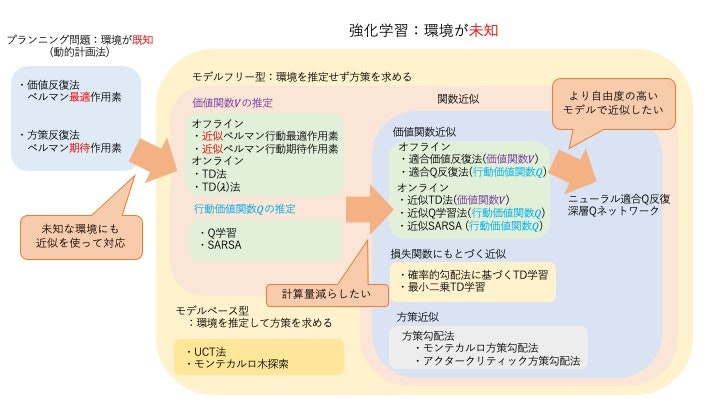

プランニング問題
環境のダイナミクス（状態遷移確率や報酬関数）が既知の場合の逐次的意思決定問題。
-
価値反復法 ベルマン最適作用素を繰り返し用いて、最適価値関数を直接求めます。 $$ (B_{*}v)(s) = \max_a {g(s,a) + \gamma \sum_{s’} p_T(s’|s,a)v(s’)} $$ $$ V^{*} = \lim_{k \to \infty} (B_{*}^{k}V)(s) $$
-
方策反復法 「方策評価」と「方策改善」の2ステップを繰り返し、最適方策を求めます。
- 方策評価: 現在の方策 $\pi$ の下での価値関数 $V^\pi$ を、ベルマン期待作用素を用いて計算します。 $$ (B_{\pi}v)(s) = \sum_a \pi(a|s) (g(s,a) + \gamma \sum_{s’} p_T(s’|s,a)v(s’)) $$ $$ V^{\pi} = \lim_{k \to \infty} (B_{\pi}^{k}V)(s) $$
- 方策改善: 計算した価値関数 $V^\pi$ を使って、より良い方策を貪欲に決定します。 $$ \pi(s) = \arg\max_a {g(s,a) + \gamma \sum_{s’} p_T(s’|s,a)V^\pi(s’)} $$
強化学習
環境のダイナミクスが未知の場合の逐次的意思決定問題。 エージェントは環境と相互作用しながらデータを収集し、そのデータから最適な方策を学習します。
価値ベースの手法
価値関数（状態価値関数Vや行動価値関数Q）を推定し、それに基づいて暗黙的に方策を決定します。
-
TD法 (Temporal-Difference Learning) 方策 $\pi$ を固定し、その下での状態価値関数Vを推定します。TD誤差 $\delta$ を用いてオンラインで価値関数を更新します。 $$ \delta_t = r_t + \gamma \hat{V}(s_{t+1}) - \hat{V}(s_t) $$ $$ \hat{V}(s_t) \leftarrow \hat{V}(s_t) + \alpha_t \delta_t $$
-
Q学習 (Q-Learning) 行動価値関数Qを推定します。次の状態の価値を最大化する行動
max_a'を用いて更新するため、方策に依存しない**方策オフ型 (Off-Policy)**の手法です。 $$ \delta_t = r_t + \gamma \max_{a’} \hat{Q}(s_{t+1}, a’) - \hat{Q}(s_t, a_t) $$ $$ \hat{Q}(s_t, a_t) \leftarrow \hat{Q}(s_t, a_t) + \alpha_t \delta_t $$ -
SARSA 行動価値関数Qを推定します。Q学習とは異なり、次の行動 $a_{t+1}$ は現在の方策 $\pi$ に従って選択します。そのため、**方策オン型 (On-Policy)**の手法です。 $$ \delta_t = r_t + \gamma \hat{Q}(s_{t+1}, a_{t+1}) - \hat{Q}(s_t, a_t) $$ $$ \hat{Q}(s_t, a_t) \leftarrow \hat{Q}(s_t, a_t) + \alpha_t \delta_t $$
方策ベースの手法
価値関数を介さず、方策 $\pi_\theta$ を直接パラメータ $\theta$ でモデル化し、最適化します。
- 方策勾配法 性能指標 $J(\theta)$ を最大化するように、勾配 $\nabla_\theta J(\theta)$ を計算し、方策パラメータ $\theta$ を更新します。 $$ \theta_{t+1} = \theta_t + \alpha \nabla_\theta J(\theta_t) $$
アクタークリティック法
価値ベースと方策ベースの手法を組み合わせたものです。
- アクター: 方策 $\pi_\theta$ を更新（行動を選択）
- クリティック: 価値関数を学習し、アクターが選択した行動を評価
TD誤差 $\delta_t$ を用いてアクターとクリティックの両方を更新します。
- クリティックの更新 (価値関数の学習) $$ \delta_t = r_t + \gamma \hat{V}w(s{t+1}) - \hat{V}w(s_t) $$ $$ w{t+1} = w_t + \alpha_w \delta_t \nabla_w \hat{V}_w(s_t) $$
- アクターの更新 (方策の学習) $$ \theta_{t+1} = \theta_t + \alpha_\theta \delta_t \nabla_\theta \log \pi_\theta(a_t|s_t) $$
関数近似
状態空間が広大または連続的な場合、価値関数や方策をテーブルで表現する代わりに、パラメータ $w$ や $\theta$ を持つ関数（線形関数やニューラルネットワークなど）で近似します。
-
価値関数近似 TD法やQ学習などの更新則に、関数近似を組み合わせます。例えば、近似Q学習では重み $w$ を以下のように更新します。 $$ \delta_t = r_t + \gamma \max_{a’} \hat{Q}w(s{t+1}, a’) - \hat{Q}w(s_t, a_t) $$ $$ w{t+1} = w_t + \alpha_t \delta_t \nabla_w \hat{Q}_w(s_t, a_t) $$ 深層Qネットワーク (DQN) は、ニューラルネットワークを行動価値関数の近似に用い、経験再生やターゲットネットワークといった技術で学習を安定させます。
-
方策関数近似 方策勾配法やアクタークリティック法で、方策を直接関数近似します。
参考文献
- 森村 哲郎, “MLP機械学習プロフェッショナルシリーズ 強化学習”